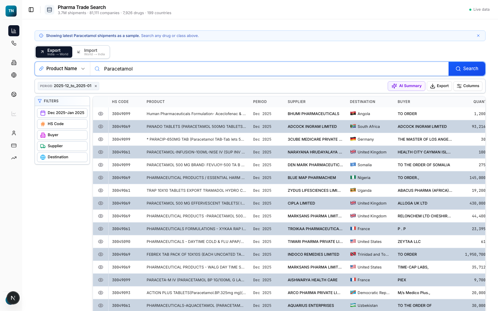
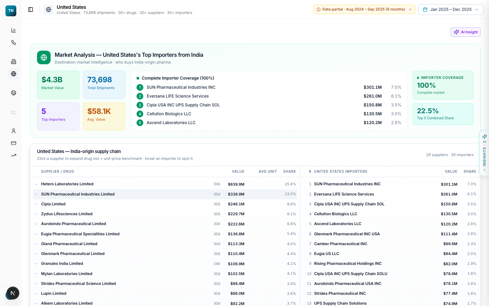
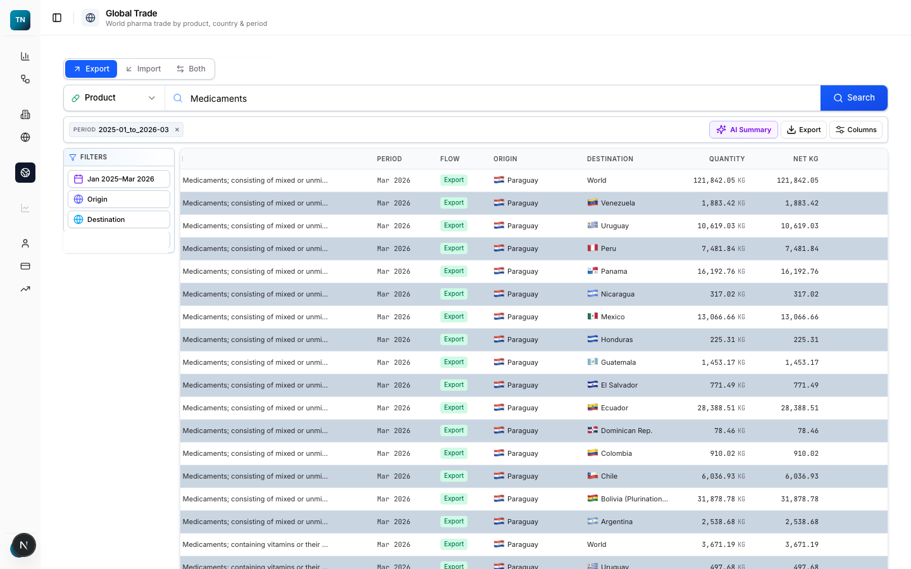

Product 01 · Trade Data
Shipment-level pharmaceutical trade intelligence from authorised sources. Export and import records kept at shipment grain, resolved to one name per product, company and country, plus a global module on bilateral flows. Search it, profile it, follow the flow, take it to a spreadsheet.
Three entry points
One search box with autocomplete across products, companies, countries and product codes. Whichever you start from, you land on a profile built from the same shipment records.
Every shipment of a drug or intermediate: value, quantity, unit price, exporter, importer and destination, filtered by period and direction. Exports reach 187 countries and 23 territories; imports arrive from 110 countries.
A profile for each of 81,000+ companies: drugs exported as a treemap, foreign buyers, markets served and a shipping footprint map. Shipment counts and market value are counted from the records, not estimated.
A profile for each trading partner: its importers, the supply chain behind them, and a supplier and drug panel that shows who sends what into that market.

Pharma Trade Search. Shipment search with filters on product, direction, period, origin and destination, on live data.

Trade Flow Analyser. Paracetamol: $141.06M across 4.5K shipments, the top importing countries and the flow from supplier to market.
Pick a drug or a supplier. The analyser totals the shipments, ranks the importing countries, lists the importers behind each one and draws the flow so the corridor is visible at a glance.
The mechanism
Records arrive with names written many ways. Each is resolved to one product, one company and one country before anything is counted, and the shipment itself is kept, so any total can be opened back into the records behind it.
Profiles
Open a company and you see its drugs, buyers, markets and shipping footprint. Open a country and you see its importers and the supply chain behind them. The two views are the same shipments, grouped differently.

Company profile. Market value, shipment count, drugs and markets for one exporter, with a treemap of its top buyers.

Country profile. Value and shipment count for one market, its importers and the suppliers feeding them.
A treemap of every product the company ships, sized by value, so the portfolio reads in one look.
The importers on the other end of each shipment, ranked, with the markets they sit in.
For a country, the suppliers and the drugs they send, side by side with the importers receiving them.

Global Trade. Bilateral flows by product and period across 105 reporter countries.
The shipment records show the consignment. The global module shows the corridor: which country reports sending what to whom, month by month, from January 2024 to March 2026.
How it is built
Every figure on a profile or in a flow is a sum over shipments you can open. The work is in the resolution, so the counts hold when you compare one company with another.
Send one product or one company. We will walk you through what the explorer already holds on it, on the live system.